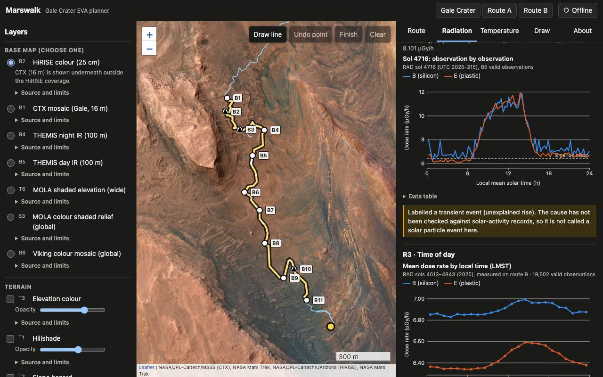

Method
Marswalk is a planning and simulation aid built from public NASA and USGS data. It is not an operational or flight tool. This page lists how the numbers are made, what is assumed, how it was checked and where it stops being valid. Every number below is read from data/site_facts.json, which scripts/61_site_facts.py recomputes independently. Data origins are on the Sources page.
1. Data pipeline
| Step | Scripts | What happens |
|---|---|---|
| 1. Common coordinates | 10_unify_crs.sh, 11_check_alignment.py | Every raster gets one coordinate system (Mars sphere, longitude/latitude). Alignment is then checked against rover waypoints (section 4). |
| 2. Extract numbers | 20_parse_rad.py, 21_parse_rems.py, 22_vectors.py, 23_geology_rudolph.py | RAD dose rates and REMS temperatures are filtered and averaged per sol and per local hour; vector layers are clipped to Gale. |
| 3. Tiles and terrain | 30_tiler.py, 32_dem_derive.py, 33_viewshed.py, 34_grid.py, 35_slope_check.py | Map tiles, slope, hillshade, line of sight from the base and a numeric elevation grid are derived from the 1 m HiRISE DEM. The map has 11 own tile layers, 2 external base layers and 14 vector layers. |
| 4. Routes | 40_route_build.py, 40_route_profile.py, 44_route_validate.py | Routes A and B are cut from the rover's real traverse, sampled every 2 m and given slope, time, line of sight and dose. |
| 5. Web | 50_export_config.py, 55_eva_precache.py, 61_site_facts.py | Settings and facts are exported to site/; the offline file list is built. No framework or build step. |
Filtering rules
- RAD: observations with a QC flag other than 00000000 are dropped, and so are observations shorter than 600 s.
- REMS ground temperature: only readings whose confidence code ends in 111 are used, averaged per local hour. Daily range is computed only for sols with enough hours covered.
- Solar longitude (Ls) per sol is computed with the Mars24 (Allison & McEwen 2000) algorithm (see Sources).
2. Assumptions
These values are the project's choices, not NASA data. They can be changed in scripts/config.json.
| Item | Value |
|---|---|
| ASSUMPTIONFlat-ground walking speed (reduced in steps on steeper ground) | 2.5 km/h |
| ASSUMPTIONSlope caution angle | 15° |
| ASSUMPTIONSlope danger angle (treated as impassable) | 25° |
| ASSUMPTIONMaximum EVA length | 6 h |
| ASSUMPTIONTime reserve | 30 min |
| ASSUMPTIONStay at the destination | 30 min |
| ASSUMPTIONEnd of daylight | 17.5 h LMST |
| ASSUMPTIONMinimum ground temperature | −40 °C |
| ASSUMPTIONDose budget (a planning number, not a health standard) | 50 µGy |
| ASSUMPTIONAntenna height for line of sight | 2 m |
3. Validation results
| Check | Result | Meaning |
|---|---|---|
| HiRISE DEM minus rover waypoint elevation (early sols) | −1.32 m mean, 94 points | DEM and rover positions agree to about a metre. |
| CTX 5 m mosaic offset | up to about 1,550 m | Reliable match points were off by up to this much, so that mosaic was not used. The 16 m CTX mosaic replaces it. Offset at the landing site: 1,153 m. |
| Tile position, sample tiles | at most 0.13 px | Generated tiles sit where they should. |
| 5 m DEM slope minus rover tilt (median) | −0.81°, r = 0.78 | Slope from the DEM tracks what the rover measured, but reads low on steep ground: at sol 4970 the rover tilted 24.0° where the steepest 5 m slope on route B is 17.4°. |
| Route self-checks | 34/34 | Distances, times and turnaround limits recomputed independently. |
| Headless Chrome checks | 130/130 panels, 84/84 EVA, 52/52 cuff, 61/61 offline, 77/77 self-test | Numbers on screen equal the data files; pages work offline. |
4. Limits
- Route A and route B were measured 13 years apart, and the gap is not an altitude or site effect. Route A radiation is from 2012–2013 (sols 1–359, B-detector mean 9.029 µGy/h, 14,059 valid observations). Route B is from 2025–2026 (sols 4613–4843, mean 6.898 µGy/h, 19,502 observations). The two periods are 13 years apart, so their difference must not be read as an effect of altitude or location; this data cannot separate the two.
- Radiation is a time record at the rover's place, not a map. The rover position fields in the RAD files are placeholders.
- The E detector (plastic) is used as a body-side reading only. No tolerance or hardware advice is derived.
- Ground temperature is a surface brightness temperature with a mean long-term uncertainty of 9.07 K.
- The EVA replay is a simulation: positions are replayed, not measured; speeds and limits are the assumptions above.
- Line of sight uses terrain only, with antenna and target at the assumed height. It is not a radio link budget.
- Two base layers (B3, B6) are loaded live from NASA Mars Trek and need a network connection; no terms of use were found for them.
- Tested only in headless Chrome. Other browsers are not verified.
5. Screens

